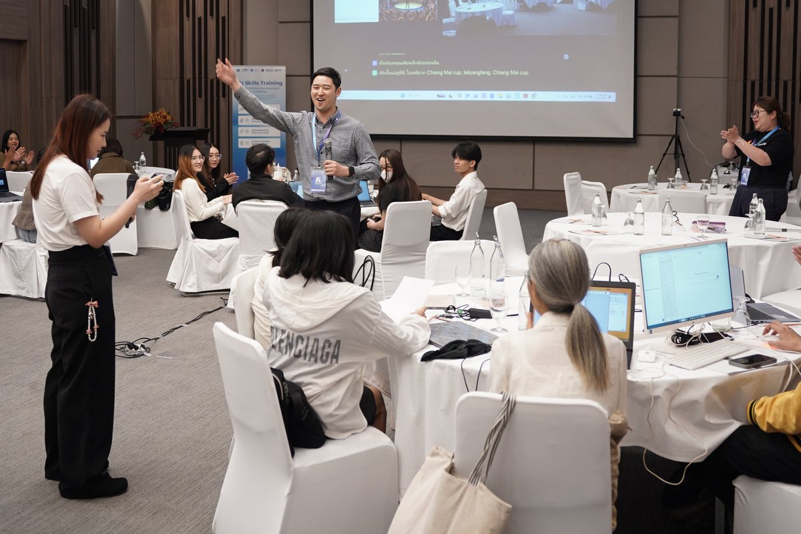
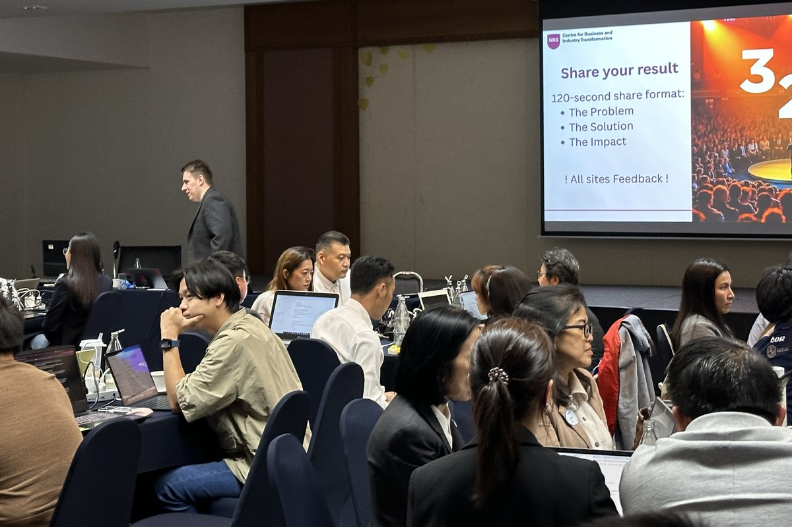

AI-Powered Business Transformation · AI-Empowered Going Global
Executive programmes
This is for you if…
…you are a CEO, a board member or a senior team leading company-wide change, and want a programme for yourself, a few colleagues or your whole organisation;
…you are an entrepreneur, founder or owner-manager taking a business into new markets, or you are sending a delegation;
…or you lead a ministry, an agency or a regional authority and want to build AI skills across your country’s or region’s workforce, or want its own senior team to transform how it works with AI.
Not an AI tools course: business transformation, empowered by AI. Custom programmes for leaders and national workforces: as an open cohort, in-company, for the senior teams of ministries and agencies, or delivered with a partner university across a country’s workforce.
Next step
Tell us who would take part, which programme interests you and the business case you would bring.
For CEOs, boards and senior teams leading company-wide change, and for the senior teams of ministries and agencies.
Bring Your Own Case
AI agents as sparring partners
AI as the leader's exoskeleton
Standard operating procedures (SOPs) restructured with AI
Building your AI workforce
2 to 5 days, customisable.
AI-Empowered Going Global
Rebuild your home advantages abroad, with AI. For entrepreneurs, founders and owner-managers taking a business into new markets, and for delegations.
The same method, Bring Your Own Case, applied to entering new markets
Bilingual support
Build a standing AI advisory board that goes home with you, your AI workforce overseas, and a working agent with a kill-trigger charter and a 90-day experiment card
3 to 5 days, customisable: an open cohort in Nottingham, in-country with partner institutions, or in-company.
AI-native outcome: an owner-managed firm that enters a market with a working agent, a rule for when to stop it, and a 90-day test plan.
The method leads, AI empowers: rationale → strategy canvases → restructured SOPs → AI workforce → roadmap and validation.
Delivered in the UK, China or Thailand, with bilingual support. Every participant receives an NTU executive certificate at a closing ceremony.
The AI edition
Make your leaders, or a national workforce, AI-native, in a programme custom-made for them: rebuild real processes with AI, build an AI workforce and leave with a roadmap.
What AI adds
Delivered: for the MHESI-funded national programme, CBIT designed sector AI courses and ran hands-on workshops in which participants used generative AI and no-code or low-code methods to design initial workflows, assistants or prototypes. CBIT era
Delivered: the same programme’s CEO track, “AI for Strategic Management for CEO”: a day on AI strategy, a day turning one process into a standard operating procedure with AI support and human checks, and a day building a simple business operating system. CBIT era
Method: participants build “a CEO exoskeleton”, an AI advisory board that spars with them, one core workflow restructured as an SOP with a human in the loop, an AI workforce, a lean-corp blueprint and a transformation roadmap for the board.
Thai-published: Professor Xiao Ma gave the special panel talk at MHESI’s launch of its national AI e-learning platform, Bangkok, 16 December 2025. CBIT era
AI-native outcome: leaders who can say where AI creates value, redesign a process around it and run an AI workforce with people in charge; participants who leave with first AI workflows, assistants or prototypes; and, for a ministry, an outcome report and a route to scale through train-the-trainer and a sister centre.
Three ways to take part
An open cohort
For you or a few colleagues: join an open cohort in Nottingham, or in-country with our partner institutions.
A private programme designed for your organisation and built on Bring Your Own Case: your people work on your organisation’s own live case, for example your CEO, board and senior top team as they lead company-wide change. Confidentiality and data-handling terms are agreed with you before day one.
For ministries and agencies: national AI skills programmes, or a programme for your leaders
Two ways in for the public sector, both government-commissioned and custom-made: National AI skills programmes, delivered with a partner university in your country, to build AI skills across your workforce; or AI-Powered Business Transformation for your leaders, the senior-team programme above, run as its own cohort or as the leaders’ track of a national programme.

Thailand’s national AI programme: the wellness and tourism track, northern Thailand, April 2026
A national programme gets you
A needs assessment.
Sector AI curricula, with research-backed sector decks.
Hands-on workshops of three days: day 1, understand and prioritise; day 2, validate and redesign; day 3, build and commit.
Joint certificates.
21 days’ post-course support.
An outcome report.
Format: five sector courses of three days each, in-country, over about five months.
Thailand’s Ministry of Higher Education, Science, Research and Innovation (MHESI) funded a national AI and entrepreneurship programme, delivered by CBIT and Chiang Mai University’s Science and Technology Park (CMU STeP).
Microcredential: Leading AI-Driven Business Transformation
The credit route behind both executive programmes: an NTU award of 10 credits at level 7, stackable to the PG Cert in Leadership and Management Practice.
A ministry-funded programme took practical AI training to businesses across Thailand
Read the story: A ministry-funded programme took practical AI training to businesses across Thailand
Who: Thailand’s Ministry of Higher Education, Science, Research and Innovation (MHESI), which funded the programme, and Chiang Mai University’s Science and Technology Park (STeP), which led it.
The challenge
MHESI funded STeP to build AI skills among industrial workers, graduates, researchers, incubator managers and science-park officers.
What CBIT did
After a needs assessment, CBIT and STeP designed sector courses: wellness and tourism, marketing and data, food manufacturing, chief executives, and incubator managers. CBIT ran hands-on three-day workshops across Thailand in 2026, with follow-up support and joint MHESI, Chiang Mai University and Nottingham Business School certificates.
What happened
Participants began designing AI workflows and prototypes for their own organisations.
On a national AI programme, Thai CEOs designed AI support for a real business process

The CEO track of Thailand’s national AI programme, June 2026
Read the story: On a national AI programme, Thai CEOs designed AI support for a real business process
Who: Chief executives and senior managers on the CEO track of an AI skills programme funded by Thailand’s Ministry of Higher Education, Science, Research and Innovation (MHESI).
The challenge
Leaders wanted to connect AI strategy with the way their organisations actually work.
What CBIT did
CBIT designed and delivered “AI for Strategic Management for CEO” at Chiang Mai University’s Science and Technology Park: a day on AI strategy, a day turning one process into a standard operating procedure with AI support and human checks, and a day building a simple business operating system.
What happened
Participants left with first executive workflows, assistants or prototypes grounded in their own businesses.
Chinese technology CEOs came to Nottingham to work on taking their businesses global
Read the story: Chinese technology CEOs came to Nottingham to work on taking their businesses global
Who: Chief executives and founders of Chinese technology companies, in an executive cohort from Fudan University School of Management.
The challenge
The CEOs needed to see where AI creates value in their businesses, and how to grow beyond China.
What CBIT did
CBIT designed a bespoke three-day strategy lab for the cohort: where AI was failing to create value, a charter for AI agents with a rule for when to stop, a 90-day experiment plan, a company visit and pitches.
What happened
The lab ran in Nottingham in July 2026, the month CBIT and the school signed a five-year sister-centre partnership.